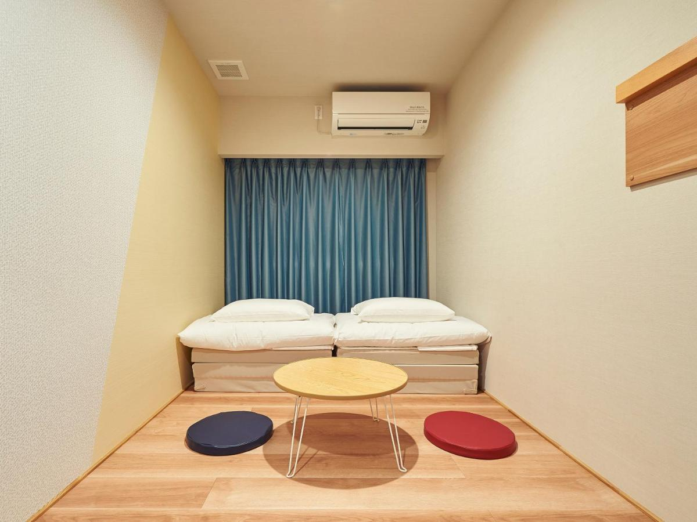
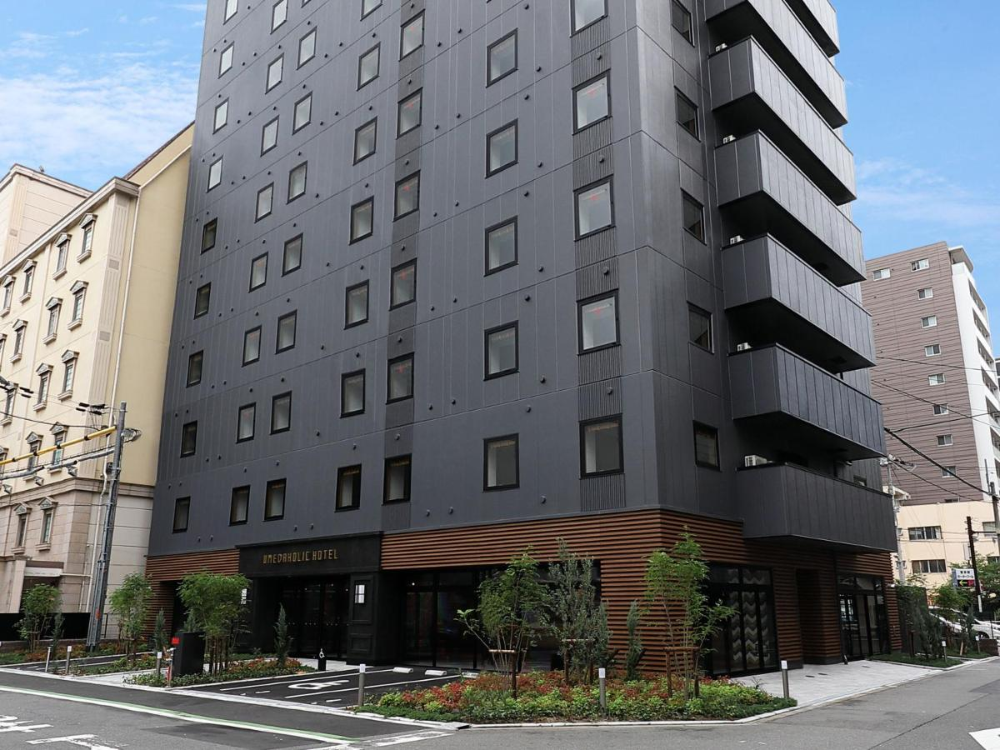
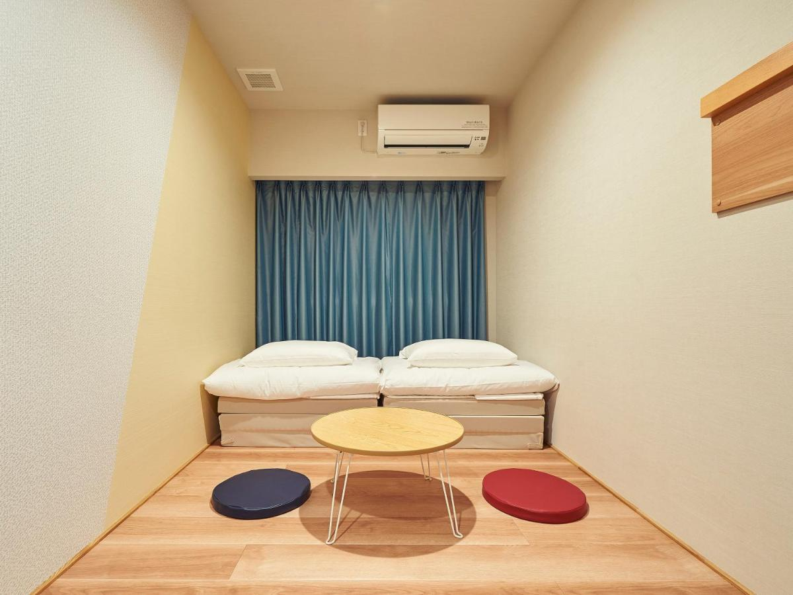
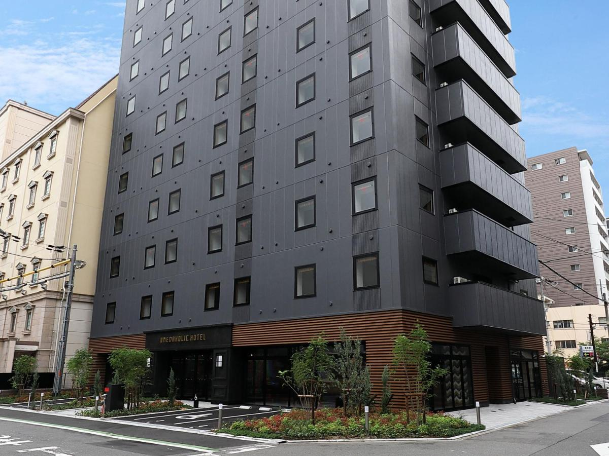

京都住宿:THE POCKET HOTEL
地址:423番, 423 Matsuyacho, Shimogyo Ward, Kyoto, 600-8105日本
大阪住宿:UMEDAHOLIC HOTEL
地址:5-2 Toganocho, Kita Ward, Osaka, 530-0056日本
地址:423番, 423 Matsuyacho, Shimogyo Ward, Kyoto, 600-8105日本
地址:5-2 Toganocho, Kita Ward, Osaka, 530-0056日本
